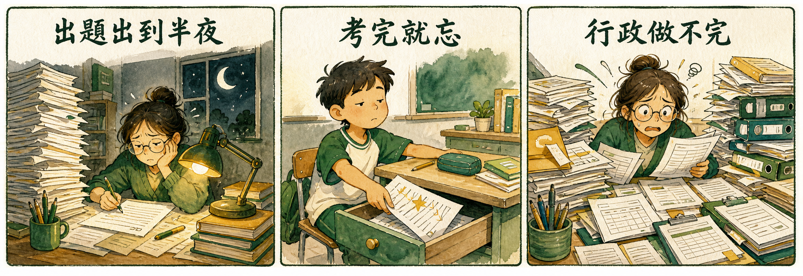

先玩玩看：同一套方法做出來的遊戲
這兩個作品就是用課堂上教的方法做的——把課文變成實境解謎。
手機、電腦都能直接玩，玩過你就知道學生為什麼會搶著寫題目。
AI 程式 × Codex 實戰｜老師的 AI 自動化工作術
你講一句話，AI 把事情做完給你看
3 小時做出班級專屬答題遊戲、AI 自動畫教材插圖、成績週報自動產出。
不用會程式——你會講話，就會指揮 AI。
花兩小時出一份複習卷，排版、對答案、印刷版⋯⋯全部自己來。AI 明明很聰明，最後動手的還是你。
你熬夜出的考卷，學生寫完 10 分鐘就進了回收桶。紙本考卷無趣、不能重玩，錯的題目下次照樣錯。
成績登記、週報、家長溝通簡報、班級公告⋯⋯同樣的表格每週重做一次，吃掉你備課和休息的時間。

ChatGPT 網頁版像一位沒有手的顧問：會想、會講、會寫，但不會開檔、不會存檔、不會執行。
這堂課教你用 Codex——OpenAI 的 AI 代理人，它直接在你的電腦上動手：
Prompt 的固定結構與「給脈絡」的溝通邏輯——之後做任何東西都能套用。
把你帶來的題庫（Word / PDF / 手寫拍照都行）直接變成有金幣、有 BOSS 的闖關遊戲。
Codex 內建繪圖模型，插圖、封面、圖表一句話畫好自動存檔——連繁體中文都寫得漂漂亮亮。
每週五自動整理成績產週報、每天自動列缺交名單——設定一次，AI 準時上班。
試算表、簡報、PDF 它都會做；出門在外用手機遙控家裡電腦的 AI 繼續幹活。
遊戲推上網路拿到專屬網址，一條連結發到班群，學生手機點開就能玩。
你把連結丟進班群，學生午休搶著玩你做的遊戲，錯的題目反而記得最牢；
而你上週要熬夜做的成績週報——AI 在週五下午就自動寄給你了。
這兩個作品就是用課堂上教的方法做的——把課文變成實境解謎。
手機、電腦都能直接玩，玩過你就知道學生為什麼會搶著寫題目。